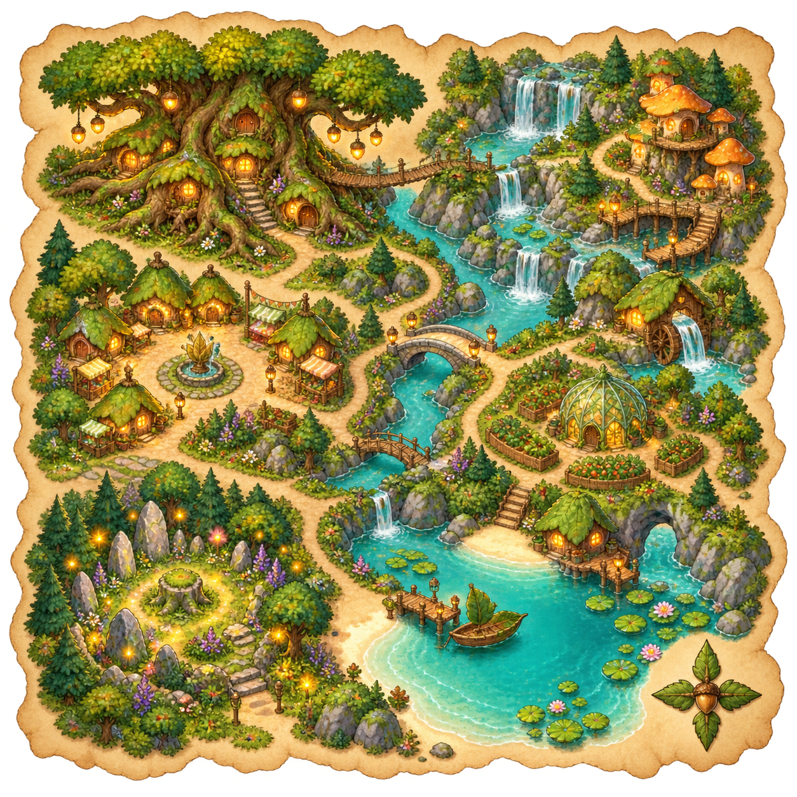
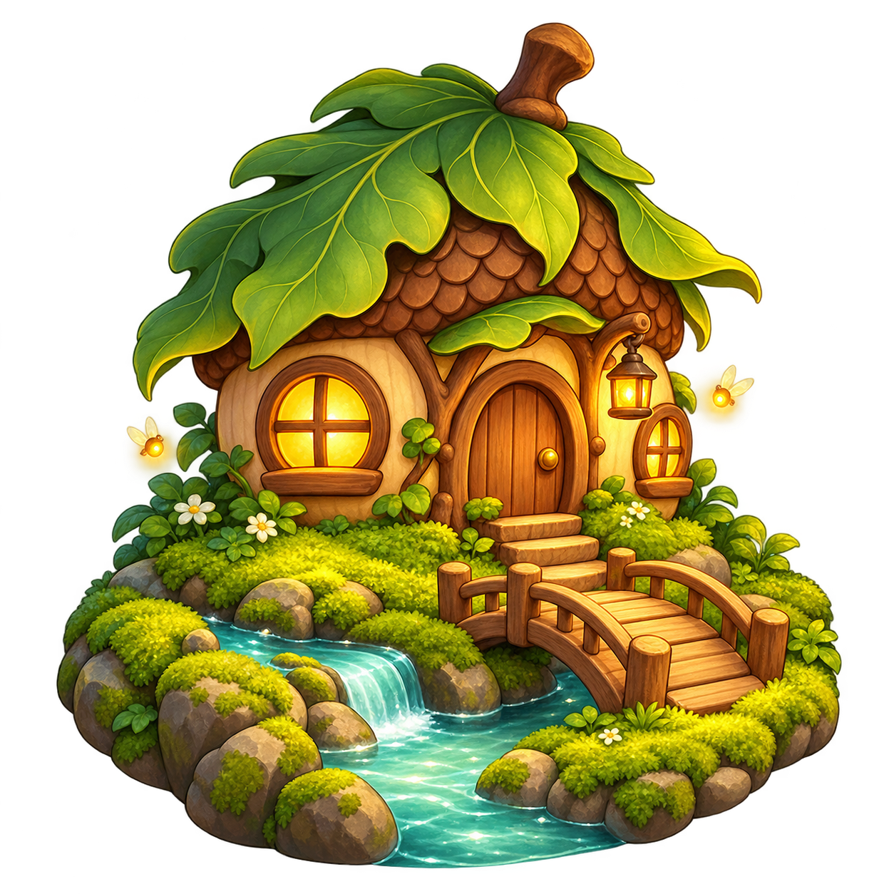

<!doctype html><html lang="ko"><meta charset="utf-8"><meta name="viewport" content="width=device-width,initial-scale=1"><title>반딧불 요정여울 이미지 검수</title>
<style>*{box-sizing:border-box}body{margin:0;background:#edf0df;color:#253d2e;font:15px system-ui,sans-serif}main{max-width:1200px;margin:auto;padding:24px}h1{font-size:24px}nav{display:flex;flex-wrap:wrap;gap:8px;position:sticky;top:0;background:#edf0dff0;padding:12px 0;z-index:1}button,select{font:inherit;padding:8px;border:1px solid #b4c49c;border-radius:10px;background:#fffdf0;color:#253d2e}button[aria-pressed=true]{background:#385b3e;color:white}.grid{display:grid;grid-template-columns:repeat(auto-fill,minmax(190px,1fr));gap:14px}.card{background:#fffdf3;border:1px solid #d3d8bd;border-radius:15px;overflow:hidden;text-align:center}.art{height:200px;display:grid;place-items:center;background:var(--surface,#f5eedc)}.art img,.art canvas{max-width:95%;max-height:190px;object-fit:contain}.card h2{font-size:14px;margin:12px 6px 5px}.card p{font-size:12px;margin:0 6px 12px;color:#61705d}.scenes{display:flex;gap:12px;overflow:auto;margin:16px 0 24px}.scenes img{height:250px;max-width:420px;object-fit:contain;border-radius:14px;background:#21473d}small{display:block;margin:12px 0;color:#66705d}.missing{opacity:.4}</style>
<main><h1>반딧불 요정여울</h1><p id="progress"></p><div class="scenes"></div>
<nav><select id="kind" aria-label="종류"><option value="all">전체</option><option value="fish">어종</option><option value="trash">쓰레기</option><option value="decoration">장식물</option></select><select id="rarity" aria-label="등급"><option value="all">전체 등급</option><option value="common">일반</option><option value="rare">희귀</option><option value="epic">특급</option><option value="mythic">신화</option></select><select id="background" aria-label="검수 배경"><option value="#f5eedc">밝은 배경</option><option value="#152f32">어두운 배경</option><option value="#287e76">여울 배경</option></select><button id="animate" aria-pressed="false">유영 시트 재생</button><select id="size" aria-label="실제 표시 크기"><option value="180">180px</option><option value="96">96px</option><option value="64">64px</option></select></nav><div id="cards" class="grid"></div><small>로컬 생성 이미지 검수용. 원격 적용 여부와 운영 화면 검증은 별도 확인합니다.</small></main>
<script>const items=[{"id":"firefly-leaf-medaka","name":"잎새송사리","kind":"fish","rarity":"common","sell_price":45,"design":"Tiny slender pale green medaka, a single leaf-shaped tail, cream belly.","movement_type":"swim","swim_y_min":0.18,"swim_y_max":0.78,"travel_direction":"both","flip_with_direction":true,"reference":"assets/references/collectible-style/common-rare-pongi.png","thumbnail_path":"fish/normal/firefly-leaf-medaka_v1_thumbnail.png","sprite_sheet_path":"fish/normal/firefly-leaf-medaka_v1_sprite.png","layout":{"cell":627,"scale":0.9354884547069272,"shifts":[[0,0],[-17,-1],[0,-72],[-15,-73]]},"thumbnail":"../../../assets/storage-upload/new/20261029-032100/fish/normal/firefly-leaf-medaka_v1_thumbnail.png","sprite":"../../../assets/storage-upload/new/20261029-032100/fish/normal/firefly-leaf-medaka_v1_sprite.png","ready":true,"animated":true},{"id":"firefly-acorn-puffer","name":"도토리복어","kind":"fish","rarity":"common","sell_price":65,"design":"Round tan pufferfish, creamy belly, small soft spines and brown speckles, snug acorn cup cap with woody stem.","movement_type":"swim","swim_y_min":0.18,"swim_y_max":0.78,"travel_direction":"both","flip_with_direction":true,"reference":"assets/references/collectible-style/common-rare-pongi.png","thumbnail_path":"fish/normal/firefly-acorn-puffer_v1_thumbnail.png","sprite_sheet_path":"fish/normal/firefly-acorn-puffer_v1_sprite.png","layout":{"cell":627,"scale":1.2660576923076923,"shifts":[[0,0],[-29,-1],[0,-74],[-29,-75]]},"thumbnail":"../../../assets/storage-upload/new/20261029-032100/fish/normal/firefly-acorn-puffer_v1_thumbnail.png","sprite":"../../../assets/storage-upload/new/20261029-032100/fish/normal/firefly-acorn-puffer_v1_sprite.png","ready":true,"animated":true},{"id":"firefly-honey-guppy","name":"꿀방울구피","kind":"fish","rarity":"common","sell_price":55,"design":"Honey yellow guppy with rounded translucent golden fan tail, tiny amber droplet marking inside belly.","movement_type":"swim","swim_y_min":0.18,"swim_y_max":0.78,"travel_direction":"both","flip_with_direction":true,"reference":"assets/references/collectible-style/common-rare-pongi.png","thumbnail_path":"fish/normal/firefly-honey-guppy_v1_thumbnail.png","sprite_sheet_path":"fish/normal/firefly-honey-guppy_v1_sprite.png","layout":{"cell":627,"scale":0.8792654424040067,"shifts":[[0,0],[-4,1],[-1,-73],[-4,-75]]},"thumbnail":"../../../assets/storage-upload/new/20261029-032100/fish/normal/firefly-honey-guppy_v1_thumbnail.png","sprite":"../../../assets/storage-upload/new/20261029-032100/fish/normal/firefly-honey-guppy_v1_sprite.png","ready":true,"animated":true},{"id":"firefly-petal-bitterling","name":"꽃잎납줄개","kind":"fish","rarity":"common","sell_price":50,"design":"Small oval ivory bitterling, peach cheeks and short peach-pink petal fins.","movement_type":"swim","swim_y_min":0.18,"swim_y_max":0.78,"travel_direction":"both","flip_with_direction":true,"reference":"assets/references/collectible-style/common-rare-pongi.png","thumbnail_path":"fish/normal/firefly-petal-bitterling_v1_thumbnail.png","sprite_sheet_path":"fish/normal/firefly-petal-bitterling_v1_sprite.png","layout":{"cell":627,"scale":0.9321769911504425,"shifts":[[0,0],[-24,2],[-1,-59],[-20,-60]]},"thumbnail":"../../../assets/storage-upload/new/20261029-032100/fish/normal/firefly-petal-bitterling_v1_thumbnail.png","sprite":"../../../assets/storage-upload/new/20261029-032100/fish/normal/firefly-petal-bitterling_v1_sprite.png","ready":true,"animated":true},{"id":"firefly-sprout-minnow","name":"새싹피라미","kind":"fish","rarity":"common","sell_price":45,"design":"Slim silver green minnow, a tiny two-leaf sprout on head, narrow forked tail.","movement_type":"swim","swim_y_min":0.18,"swim_y_max":0.78,"travel_direction":"both","flip_with_direction":true,"reference":"assets/references/collectible-style/common-rare-pongi.png","thumbnail_path":"fish/normal/firefly-sprout-minnow_v1_thumbnail.png","sprite_sheet_path":"fish/normal/firefly-sprout-minnow_v1_sprite.png","layout":{"cell":627,"scale":0.9338297872340425,"shifts":[[0,0],[-14,0],[-1,-115],[-12,-115]]},"thumbnail":"../../../assets/storage-upload/new/20261029-032100/fish/normal/firefly-sprout-minnow_v1_thumbnail.png","sprite":"../../../assets/storage-upload/new/20261029-032100/fish/normal/firefly-sprout-minnow_v1_sprite.png","ready":true,"animated":true},{"id":"firefly-clover-platy","name":"클로버플래티","kind":"fish","rarity":"common","sell_price":55,"design":"Small warm orange platy, rounded green clover-shaped tail and cream belly.","movement_type":"swim","swim_y_min":0.18,"swim_y_max":0.78,"travel_direction":"both","flip_with_direction":true,"reference":"assets/references/collectible-style/common-rare-pongi.png","thumbnail_path":"fish/normal/firefly-clover-platy_v1_thumbnail.png","sprite_sheet_path":"fish/normal/firefly-clover-platy_v1_sprite.png","layout":{"cell":627,"scale":0.9288888888888889,"shifts":[[0,0],[-1,0],[-1,-76],[0,-78]]},"thumbnail":"../../../assets/storage-upload/new/20261029-032100/fish/normal/firefly-clover-platy_v1_thumbnail.png","sprite":"../../../assets/storage-upload/new/20261029-032100/fish/normal/firefly-clover-platy_v1_sprite.png","ready":true,"animated":true},{"id":"firefly-willow-loach","name":"버들잎미꾸리","kind":"fish","rarity":"common","sell_price":50,"design":"Long slender willow-green loach, flowing willow-leaf markings along flanks, short whiskers.","movement_type":"swim","swim_y_min":0.6,"swim_y_max":0.88,"travel_direction":"both","flip_with_direction":true,"reference":"assets/references/collectible-style/common-rare-pongi.png","thumbnail_path":"fish/normal/firefly-willow-loach_v1_thumbnail.png","sprite_sheet_path":"fish/normal/firefly-willow-loach_v1_sprite.png","layout":{"cell":627,"scale":0.8926779661016949,"shifts":[[0,0],[-8,1],[0,-92],[-8,-102]]},"thumbnail":"../../../assets/storage-upload/new/20261029-032100/fish/normal/firefly-willow-loach_v1_thumbnail.png","sprite":"../../../assets/storage-upload/new/20261029-032100/fish/normal/firefly-willow-loach_v1_sprite.png","ready":true,"animated":true},{"id":"firefly-moss-goby","name":"이끼망둑","kind":"fish","rarity":"common","sell_price":50,"design":"Small squat goby, soft moss-green blotches, broad short fins, rounded friendly head.","movement_type":"swim","swim_y_min":0.6,"swim_y_max":0.88,"travel_direction":"both","flip_with_direction":true,"reference":"assets/references/collectible-style/common-rare-pongi.png","thumbnail_path":"fish/normal/firefly-moss-goby_v1_thumbnail.png","sprite_sheet_path":"fish/normal/firefly-moss-goby_v1_sprite.png","layout":{"cell":627,"scale":1.1474509803921566,"shifts":[[0,0],[-50,0],[0,-78],[-44,-77]]},"thumbnail":"../../../assets/storage-upload/new/20261029-032100/fish/normal/firefly-moss-goby_v1_thumbnail.png","sprite":"../../../assets/storage-upload/new/20261029-032100/fish/normal/firefly-moss-goby_v1_sprite.png","ready":true,"animated":true},{"id":"firefly-bud-goldfish","name":"봉오리금붕어","kind":"fish","rarity":"common","sell_price":65,"design":"Plump peach goldfish resembling a closed flower bud, compact folded petal fan tail.","movement_type":"swim","swim_y_min":0.18,"swim_y_max":0.78,"travel_direction":"both","flip_with_direction":true,"reference":"assets/references/collectible-style/common-rare-pongi.png","thumbnail_path":"fish/normal/firefly-bud-goldfish_v1_thumbnail.png","sprite_sheet_path":"fish/normal/firefly-bud-goldfish_v1_sprite.png","layout":{"cell":627,"scale":0.917560975609756,"shifts":[[0,0],[-50,-2],[0,-83],[-44,-83]]},"thumbnail":"../../../assets/storage-upload/new/20261029-032100/fish/normal/firefly-bud-goldfish_v1_thumbnail.png","sprite":"../../../assets/storage-upload/new/20261029-032100/fish/normal/firefly-bud-goldfish_v1_sprite.png","ready":true,"animated":true},{"id":"firefly-daisy-medaka","name":"데이지메다카","kind":"fish","rarity":"common","sell_price":55,"design":"Small milky white medaka with yellow cheek and white daisy-petal fan tail.","movement_type":"swim","swim_y_min":0.18,"swim_y_max":0.78,"travel_direction":"both","flip_with_direction":true,"reference":"assets/references/collectible-style/common-rare-pongi.png","thumbnail_path":"fish/normal/firefly-daisy-medaka_v1_thumbnail.png","sprite_sheet_path":"fish/normal/firefly-daisy-medaka_v1_sprite.png","layout":{"cell":627,"scale":0.917560975609756,"shifts":[[0,0],[-41,2],[0,-110],[-40,-110]]},"thumbnail":"../../../assets/storage-upload/new/20261029-032100/fish/normal/firefly-daisy-medaka_v1_thumbnail.png","sprite":"../../../assets/storage-upload/new/20261029-032100/fish/normal/firefly-daisy-medaka_v1_sprite.png","ready":true,"animated":true},{"id":"firefly-dandelion-guppy","name":"민들레꼬리구피","kind":"fish","rarity":"common","sell_price":65,"design":"Warm brown guppy with a delicate round white dandelion-fluff fan tail, continuous clean silhouette.","movement_type":"swim","swim_y_min":0.18,"swim_y_max":0.78,"travel_direction":"both","flip_with_direction":true,"reference":"assets/references/collectible-style/common-rare-pongi.png","thumbnail_path":"fish/normal/firefly-dandelion-guppy_v1_thumbnail.png","sprite_sheet_path":"fish/normal/firefly-dandelion-guppy_v1_sprite.png","layout":{"cell":627,"scale":0.9003076923076923,"shifts":[[0,0],[-12,-1],[2,-57],[-9,-57]]},"thumbnail":"../../../assets/storage-upload/new/20261029-032100/fish/normal/firefly-dandelion-guppy_v1_thumbnail.png","sprite":"../../../assets/storage-upload/new/20261029-032100/fish/normal/firefly-dandelion-guppy_v1_sprite.png","ready":true,"animated":true},{"id":"firefly-grass-seed-anchovy","name":"풀씨멸치","kind":"fish","rarity":"common","sell_price":45,"design":"Slender silver anchovy with pale tan grass-seed flecks and tiny green forked tail.","movement_type":"swim","swim_y_min":0.18,"swim_y_max":0.78,"travel_direction":"both","flip_with_direction":true,"reference":"assets/references/collectible-style/common-rare-pongi.png","thumbnail_path":"fish/normal/firefly-grass-seed-anchovy_v1_thumbnail.png","sprite_sheet_path":"fish/normal/firefly-grass-seed-anchovy_v1_sprite.png","layout":{"cell":627,"scale":0.8881618887015177,"shifts":[[0,0],[-13,4],[1,-67],[-11,-67]]},"thumbnail":"../../../assets/storage-upload/new/20261029-032100/fish/normal/firefly-grass-seed-anchovy_v1_thumbnail.png","sprite":"../../../assets/storage-upload/new/20261029-032100/fish/normal/firefly-grass-seed-anchovy_v1_sprite.png","ready":true,"animated":true},{"id":"firefly-pinecone-carp","name":"솔방울붕어","kind":"fish","rarity":"common","sell_price":60,"design":"Little chestnut carp with large rounded overlapping pinecone scales, cream belly.","movement_type":"swim","swim_y_min":0.18,"swim_y_max":0.78,"travel_direction":"both","flip_with_direction":true,"reference":"assets/references/collectible-style/common-rare-pongi.png","thumbnail_path":"fish/normal/firefly-pinecone-carp_v1_thumbnail.png","sprite_sheet_path":"fish/normal/firefly-pinecone-carp_v1_sprite.png","layout":{"cell":627,"scale":1.155,"shifts":[[0,0],[-21,1],[11,-51],[-19,-51]]},"thumbnail":"../../../assets/storage-upload/new/20261029-032100/fish/normal/firefly-pinecone-carp_v1_thumbnail.png","sprite":"../../../assets/storage-upload/new/20261029-032100/fish/normal/firefly-pinecone-carp_v1_sprite.png","ready":true,"animated":true},{"id":"firefly-waterlily-fry","name":"수련치어","kind":"fish","rarity":"common","sell_price":60,"design":"Tiny rosy pink fish fry, small green waterlily-leaf pectoral fins and short translucent tail.","movement_type":"swim","swim_y_min":0.18,"swim_y_max":0.78,"travel_direction":"both","flip_with_direction":true,"reference":"assets/references/collectible-style/common-rare-pongi.png","thumbnail_path":"fish/normal/firefly-waterlily-fry_v1_thumbnail.png","sprite_sheet_path":"fish/normal/firefly-waterlily-fry_v1_sprite.png","layout":{"cell":627,"scale":1.378743455497382,"shifts":[[0,0],[-28,-1],[1,-72],[-20,-70]]},"thumbnail":"../../../assets/storage-upload/new/20261029-032100/fish/normal/firefly-waterlily-fry_v1_thumbnail.png","sprite":"../../../assets/storage-upload/new/20261029-032100/fish/normal/firefly-waterlily-fry_v1_sprite.png","ready":true,"animated":true},{"id":"firefly-mushroom-sculpin","name":"버섯모자둑중개","kind":"fish","rarity":"common","sell_price":60,"design":"Small broad-headed sculpin, brown mushroom-cap pattern on crown, wide peach fan pectoral fins.","movement_type":"swim","swim_y_min":0.6,"swim_y_max":0.88,"travel_direction":"both","flip_with_direction":true,"reference":"assets/references/collectible-style/common-rare-pongi.png","thumbnail_path":"fish/normal/firefly-mushroom-sculpin_v1_thumbnail.png","sprite_sheet_path":"fish/normal/firefly-mushroom-sculpin_v1_sprite.png","layout":{"cell":627,"scale":1.2107586206896552,"shifts":[[0,0],[-24,0],[0,-58],[-22,-58]]},"thumbnail":"../../../assets/storage-upload/new/20261029-032100/fish/normal/firefly-mushroom-sculpin_v1_thumbnail.png","sprite":"../../../assets/storage-upload/new/20261029-032100/fish/normal/firefly-mushroom-sculpin_v1_sprite.png","ready":true,"animated":true},{"id":"firefly-firefly-lanternfish","name":"반딧불랜턴피시","kind":"fish","rarity":"rare","sell_price":230,"design":"Small teal lanternfish, rounded honey-yellow glowing organ at tail tip, subtle translucent fins.","movement_type":"swim","swim_y_min":0.18,"swim_y_max":0.78,"travel_direction":"both","flip_with_direction":true,"reference":"assets/references/collectible-style/common-rare-pongi.png","thumbnail_path":"fish/rare/firefly-firefly-lanternfish_v1_thumbnail.png","sprite_sheet_path":"fish/rare/firefly-firefly-lanternfish_v1_sprite.png","layout":{"cell":627,"scale":1.1575384615384616,"shifts":[[0,0],[-61,0],[1,-149],[-52,-149]]},"thumbnail":"../../../assets/storage-upload/new/20261029-032100/fish/rare/firefly-firefly-lanternfish_v1_thumbnail.png","sprite":"../../../assets/storage-upload/new/20261029-032100/fish/rare/firefly-firefly-lanternfish_v1_sprite.png","ready":true,"animated":true},{"id":"firefly-flower-cloak-seahorse","name":"꽃망토해마","kind":"fish","rarity":"rare","sell_price":280,"design":"A real little seahorse with flower-calyx cap and short pink petal cloak, curled tail with tiny flower bud.","movement_type":"swim","swim_y_min":0.18,"swim_y_max":0.78,"travel_direction":"both","flip_with_direction":true,"reference":"assets/references/collectible-style/common-rare-pongi.png","thumbnail_path":"fish/rare/firefly-flower-cloak-seahorse_v1_thumbnail.png","sprite_sheet_path":"fish/rare/firefly-flower-cloak-seahorse_v1_sprite.png","layout":{"cell":627,"scale":0.9207692307692308,"shifts":[[0,0],[25,1],[5,-4],[27,-4]]},"thumbnail":"../../../assets/storage-upload/new/20261029-032100/fish/rare/firefly-flower-cloak-seahorse_v1_thumbnail.png","sprite":"../../../assets/storage-upload/new/20261029-032100/fish/rare/firefly-flower-cloak-seahorse_v1_sprite.png","ready":true,"animated":true},{"id":"firefly-waterlily-jellyfish","name":"수련우산해파리","kind":"fish","rarity":"rare","sell_price":260,"design":"Jellyfish with broad waterlily-leaf umbrella bell, short dangling pink flower-stamen tentacles, readable right-facing tilt.","movement_type":"pulse","swim_y_min":0.18,"swim_y_max":0.78,"travel_direction":"both","flip_with_direction":true,"reference":"assets/references/collectible-style/common-rare-pongi.png","thumbnail_path":"fish/rare/firefly-waterlily-jellyfish_v1_thumbnail.png","sprite_sheet_path":"fish/rare/firefly-waterlily-jellyfish_v1_sprite.png","layout":{"cell":627,"scale":0.9753333333333333,"shifts":[[0,0],[-27,0],[0,-40],[-28,-41]]},"thumbnail":"../../../assets/storage-upload/new/20261029-032100/fish/rare/firefly-waterlily-jellyfish_v1_thumbnail.png","sprite":"../../../assets/storage-upload/new/20261029-032100/fish/rare/firefly-waterlily-jellyfish_v1_sprite.png","ready":true,"animated":true},{"id":"firefly-leaf-wing-guppy","name":"잎날개구피","kind":"fish","rarity":"rare","sell_price":240,"design":"Pale green guppy with translucent veined leaf fins and two-lobed wide leafy tail. Fish anatomy, not humanoid.","movement_type":"swim","swim_y_min":0.18,"swim_y_max":0.78,"travel_direction":"both","flip_with_direction":true,"reference":"assets/references/collectible-style/common-rare-pongi.png","thumbnail_path":"fish/rare/firefly-leaf-wing-guppy_v1_thumbnail.png","sprite_sheet_path":"fish/rare/firefly-leaf-wing-guppy_v1_sprite.png","layout":{"cell":627,"scale":0.912790294627383,"shifts":[[0,0],[-1,1],[0,-100],[0,-100]]},"thumbnail":"../../../assets/storage-upload/new/20261029-032100/fish/rare/firefly-leaf-wing-guppy_v1_thumbnail.png","sprite":"../../../assets/storage-upload/new/20261029-032100/fish/rare/firefly-leaf-wing-guppy_v1_sprite.png","ready":true,"animated":true},{"id":"firefly-clover-postfish","name":"클로버우체부","kind":"fish","rarity":"rare","sell_price":270,"design":"Small orange fish wearing clover cap and folded leaf mail satchel against flank. Fins and tail, no arms or legs.","movement_type":"swim","swim_y_min":0.18,"swim_y_max":0.78,"travel_direction":"both","flip_with_direction":true,"reference":"assets/references/collectible-style/common-rare-pongi.png","thumbnail_path":"fish/rare/firefly-clover-postfish_v1_thumbnail.png","sprite_sheet_path":"fish/rare/firefly-clover-postfish_v1_sprite.png","layout":{"cell":627,"scale":1.0128461538461537,"shifts":[[0,0],[-34,2],[6,-130],[-33,-129]]},"thumbnail":"../../../assets/storage-upload/new/20261029-032100/fish/rare/firefly-clover-postfish_v1_thumbnail.png","sprite":"../../../assets/storage-upload/new/20261029-032100/fish/rare/firefly-clover-postfish_v1_sprite.png","ready":true,"animated":true},{"id":"firefly-willow-ribbon-pipefish","name":"버들리본실고기","kind":"fish","rarity":"rare","sell_price":240,"design":"Very long thin green pipefish with long willow-leaf dorsal ribbons, tiny ivory flower near head, long straight snout.","movement_type":"swim","swim_y_min":0.18,"swim_y_max":0.78,"travel_direction":"both","flip_with_direction":true,"reference":"assets/references/collectible-style/common-rare-pongi.png","thumbnail_path":"fish/rare/firefly-willow-ribbon-pipefish_v1_thumbnail.png","sprite_sheet_path":"fish/rare/firefly-willow-ribbon-pipefish_v1_sprite.png","layout":{"cell":627,"scale":0.8987713310580204,"shifts":[[0,0],[-13,0],[8,-94],[-8,-102]]},"thumbnail":"../../../assets/storage-upload/new/20261029-032100/fish/rare/firefly-willow-ribbon-pipefish_v1_thumbnail.png","sprite":"../../../assets/storage-upload/new/20261029-032100/fish/rare/firefly-willow-ribbon-pipefish_v1_sprite.png","ready":true,"animated":true},{"id":"firefly-acorn-lantern-hermit","name":"도토리등소라게","kind":"fish","rarity":"rare","sell_price":290,"design":"Real hermit crab with acorn shell cottage, round door, small warm lantern at entrance, articulated legs and claws; walking to right.","movement_type":"crawl","swim_y_min":0.85,"swim_y_max":0.95,"travel_direction":"both","flip_with_direction":true,"reference":"assets/references/collectible-style/common-rare-pongi.png","thumbnail_path":"fish/rare/firefly-acorn-lantern-hermit_v1_thumbnail.png","sprite_sheet_path":"fish/rare/firefly-acorn-lantern-hermit_v1_sprite.png","layout":{"cell":627,"scale":1.2721739130434782,"shifts":[[0,0],[-44,1],[7,-55],[-45,-59]]},"thumbnail":"../../../assets/storage-upload/new/20261029-032100/fish/rare/firefly-acorn-lantern-hermit_v1_thumbnail.png","sprite":"../../../assets/storage-upload/new/20261029-032100/fish/rare/firefly-acorn-lantern-hermit_v1_sprite.png","ready":true,"animated":true},{"id":"firefly-flower-letter-batfish","name":"꽃편지제비고기","kind":"fish","rarity":"rare","sell_price":250,"design":"Tall laterally compressed batfish, long fins shaped like folded ivory flower letters, tiny pink flower-seal marking.","movement_type":"swim","swim_y_min":0.18,"swim_y_max":0.78,"travel_direction":"both","flip_with_direction":true,"reference":"assets/references/collectible-style/common-rare-pongi.png","thumbnail_path":"fish/rare/firefly-flower-letter-batfish_v1_thumbnail.png","sprite_sheet_path":"fish/rare/firefly-flower-letter-batfish_v1_sprite.png","layout":{"cell":627,"scale":1.2660576923076923,"shifts":[[0,0],[-2,1],[6,-65],[4,-63]]},"thumbnail":"../../../assets/storage-upload/new/20261029-032100/fish/rare/firefly-flower-letter-batfish_v1_thumbnail.png","sprite":"../../../assets/storage-upload/new/20261029-032100/fish/rare/firefly-flower-letter-batfish_v1_sprite.png","ready":true,"animated":true},{"id":"firefly-clover-ray","name":"클로버가오리","kind":"fish","rarity":"rare","sell_price":280,"design":"Broad compact stingray shaped like a four-leaf clover, soft leaf veins, slender short stem-like tail, face to right.","movement_type":"swim","swim_y_min":0.18,"swim_y_max":0.78,"travel_direction":"both","flip_with_direction":true,"reference":"assets/references/collectible-style/common-rare-pongi.png","thumbnail_path":"fish/rare/firefly-clover-ray_v1_thumbnail.png","sprite_sheet_path":"fish/rare/firefly-clover-ray_v1_sprite.png","layout":{"cell":627,"scale":1.0167567567567566,"shifts":[[0,0],[-31,4],[4,-79],[-29,-77]]},"thumbnail":"../../../assets/storage-upload/new/20261029-032100/fish/rare/firefly-clover-ray_v1_thumbnail.png","sprite":"../../../assets/storage-upload/new/20261029-032100/fish/rare/firefly-clover-ray_v1_sprite.png","ready":true,"animated":true},{"id":"firefly-woodgrain-turtle","name":"나무결거북","kind":"fish","rarity":"rare","sell_price":260,"design":"Small swimming turtle, rounded woodgrain shell with growth rings and tiny leaves along rim, moss-green limbs.","movement_type":"swim","swim_y_min":0.18,"swim_y_max":0.78,"travel_direction":"both","flip_with_direction":true,"reference":"assets/references/collectible-style/common-rare-pongi.png","thumbnail_path":"fish/rare/firefly-woodgrain-turtle_v1_thumbnail.png","sprite_sheet_path":"fish/rare/firefly-woodgrain-turtle_v1_sprite.png","layout":{"cell":627,"scale":1.1499563318777293,"shifts":[[0,0],[-39,0],[4,-44],[-41,-44]]},"thumbnail":"../../../assets/storage-upload/new/20261029-032100/fish/rare/firefly-woodgrain-turtle_v1_thumbnail.png","sprite":"../../../assets/storage-upload/new/20261029-032100/fish/rare/firefly-woodgrain-turtle_v1_sprite.png","ready":true,"animated":true},{"id":"firefly-lantern-keeper-fairy","name":"반딧불 등지기 요정","kind":"fish","rarity":"epic","sell_price":1200,"design":"Actual tiny humanoid fairy with honey-gold bob, pointed ears, cream petal tunic, short moss-green leaf cloak, acorn shoes, translucent green insect wings, curved twig flower-bud lantern held in both hands.","movement_type":"swim","swim_y_min":0.18,"swim_y_max":0.78,"travel_direction":"both","flip_with_direction":true,"reference":"assets/references/collectible-style/epic-mythic-starlight.png","thumbnail_path":"fish/epic/firefly-lantern-keeper-fairy_v1_thumbnail.png","sprite_sheet_path":"fish/epic/firefly-lantern-keeper-fairy_v1_sprite.png","layout":{"cell":627,"scale":1.2421698113207547,"shifts":[[0,0],[-45,0],[1,-52],[-45,-51]]},"thumbnail":"../../../assets/storage-upload/new/20261029-032100/fish/epic/firefly-lantern-keeper-fairy_v1_thumbnail.png","sprite":"../../../assets/storage-upload/new/20261029-032100/fish/epic/firefly-lantern-keeper-fairy_v1_sprite.png","ready":true,"animated":true},{"id":"firefly-acorn-warden-fairy","name":"도토리 숲지기 요정","kind":"fish","rarity":"epic","sell_price":1250,"design":"Actual tiny humanoid forest guardian fairy with chestnut hair, acorn cap, russet leaf tunic, short green cloak, acorn satchel and little twig staff, clear insect wings.","movement_type":"swim","swim_y_min":0.18,"swim_y_max":0.78,"travel_direction":"both","flip_with_direction":true,"reference":"assets/references/collectible-style/epic-mythic-starlight.png","thumbnail_path":"fish/epic/firefly-acorn-warden-fairy_v1_thumbnail.png","sprite_sheet_path":"fish/epic/firefly-acorn-warden-fairy_v1_sprite.png","layout":{"cell":627,"scale":1.12779443254818,"shifts":[[0,0],[-38,2],[10,-54],[-38,-54]]},"thumbnail":"../../../assets/storage-upload/new/20261029-032100/fish/epic/firefly-acorn-warden-fairy_v1_thumbnail.png","sprite":"../../../assets/storage-upload/new/20261029-032100/fish/epic/firefly-acorn-warden-fairy_v1_sprite.png","ready":true,"animated":true},{"id":"firefly-waterlily-dancer-fairy","name":"수련 무희 요정","kind":"fish","rarity":"epic","sell_price":1300,"design":"Actual tiny humanoid fairy dancer with soft rose hair, fully covering layered pink waterlily petal dress, green leaf collar, long translucent wings, graceful floating dance pose.","movement_type":"swim","swim_y_min":0.18,"swim_y_max":0.78,"travel_direction":"both","flip_with_direction":true,"reference":"assets/references/collectible-style/epic-mythic-starlight.png","thumbnail_path":"fish/epic/firefly-waterlily-dancer-fairy_v1_thumbnail.png","sprite_sheet_path":"fish/epic/firefly-waterlily-dancer-fairy_v1_sprite.png","layout":{"cell":627,"scale":1.1229850746268655,"shifts":[[0,0],[-57,-1],[1,-62],[-56,-59]]},"thumbnail":"../../../assets/storage-upload/new/20261029-032100/fish/epic/firefly-waterlily-dancer-fairy_v1_thumbnail.png","sprite":"../../../assets/storage-upload/new/20261029-032100/fish/epic/firefly-waterlily-dancer-fairy_v1_sprite.png","ready":true,"animated":true},{"id":"firefly-clover-luck-fairy","name":"클로버 행운 요정","kind":"fish","rarity":"epic","sell_price":1150,"design":"Actual tiny humanoid fairy with curly green hair, clover cap, cream and green leafy outfit, holds oversized four-leaf clover parasol, small clear wings.","movement_type":"swim","swim_y_min":0.18,"swim_y_max":0.78,"travel_direction":"both","flip_with_direction":true,"reference":"assets/references/collectible-style/epic-mythic-starlight.png","thumbnail_path":"fish/epic/firefly-clover-luck-fairy_v1_thumbnail.png","sprite_sheet_path":"fish/epic/firefly-clover-luck-fairy_v1_sprite.png","layout":{"cell":627,"scale":1.2421698113207547,"shifts":[[0,0],[-13,2],[4,-34],[0,-31]]},"thumbnail":"../../../assets/storage-upload/new/20261029-032100/fish/epic/firefly-clover-luck-fairy_v1_thumbnail.png","sprite":"../../../assets/storage-upload/new/20261029-032100/fish/epic/firefly-clover-luck-fairy_v1_sprite.png","ready":true,"animated":true},{"id":"firefly-flower-post-fairy","name":"꽃편지 배달 요정","kind":"fish","rarity":"epic","sell_price":1100,"design":"Actual tiny humanoid fairy with auburn short hair, flower-bud cap, leaf cape, fully covering ivory tunic, leaf mail satchel filled with folded pink petal letters, clear wings.","movement_type":"swim","swim_y_min":0.18,"swim_y_max":0.78,"travel_direction":"both","flip_with_direction":true,"reference":"assets/references/collectible-style/epic-mythic-starlight.png","thumbnail_path":"fish/epic/firefly-flower-post-fairy_v1_thumbnail.png","sprite_sheet_path":"fish/epic/firefly-flower-post-fairy_v1_sprite.png","layout":{"cell":627,"scale":1.0859381443298968,"shifts":[[0,0],[-63,0],[12,-49],[-64,-56]]},"thumbnail":"../../../assets/storage-upload/new/20261029-032100/fish/epic/firefly-flower-post-fairy_v1_thumbnail.png","sprite":"../../../assets/storage-upload/new/20261029-032100/fish/epic/firefly-flower-post-fairy_v1_sprite.png","ready":true,"animated":true},{"id":"firefly-mushroom-child-fairy","name":"버섯집 꼬마 요정","kind":"fish","rarity":"epic","sell_price":1150,"design":"Actual little humanoid fairy, rounded chestnut mushroom cap, fully covering cream outfit and little boots, mushroom-cottage backpack with honey-lit window, short clear wings.","movement_type":"swim","swim_y_min":0.18,"swim_y_max":0.78,"travel_direction":"both","flip_with_direction":true,"reference":"assets/references/collectible-style/epic-mythic-starlight.png","thumbnail_path":"fish/epic/firefly-mushroom-child-fairy_v1_thumbnail.png","sprite_sheet_path":"fish/epic/firefly-mushroom-child-fairy_v1_sprite.png","layout":{"cell":627,"scale":1.2191666666666665,"shifts":[[0,0],[19,0],[-1,-24],[23,-32]]},"thumbnail":"../../../assets/storage-upload/new/20261029-032100/fish/epic/firefly-mushroom-child-fairy_v1_thumbnail.png","sprite":"../../../assets/storage-upload/new/20261029-032100/fish/epic/firefly-mushroom-child-fairy_v1_sprite.png","ready":true,"animated":true},{"id":"firefly-honey-teahouse-fairy","name":"꿀꽃 찻집 요정","kind":"fish","rarity":"epic","sell_price":1200,"design":"Actual tiny humanoid fairy with honey-gold braids, cream flower-calyx apron over moss dress, holding a flower-petal teacup on acorn saucer, translucent honey wings.","movement_type":"swim","swim_y_min":0.18,"swim_y_max":0.78,"travel_direction":"both","flip_with_direction":true,"reference":"assets/references/collectible-style/epic-mythic-starlight.png","thumbnail_path":"fish/epic/firefly-honey-teahouse-fairy_v1_thumbnail.png","sprite_sheet_path":"fish/epic/firefly-honey-teahouse-fairy_v1_sprite.png","layout":{"cell":627,"scale":1.0704878048780488,"shifts":[[0,0],[-48,5],[14,-19],[-20,-16]]},"thumbnail":"../../../assets/storage-upload/new/20261029-032100/fish/epic/firefly-honey-teahouse-fairy_v1_thumbnail.png","sprite":"../../../assets/storage-upload/new/20261029-032100/fish/epic/firefly-honey-teahouse-fairy_v1_sprite.png","ready":true,"animated":true},{"id":"firefly-evening-lullaby-fairy","name":"달맞이 자장가 요정","kind":"fish","rarity":"epic","sell_price":1250,"design":"Actual tiny humanoid fairy with pale yellow evening-primrose hat, cream full-length sleep robe, holding a little seedpod harp, soft golden translucent wings, peaceful expression.","movement_type":"swim","swim_y_min":0.18,"swim_y_max":0.78,"travel_direction":"both","flip_with_direction":true,"reference":"assets/references/collectible-style/epic-mythic-starlight.png","thumbnail_path":"fish/epic/firefly-evening-lullaby-fairy_v1_thumbnail.png","sprite_sheet_path":"fish/epic/firefly-evening-lullaby-fairy_v1_sprite.png","layout":{"cell":627,"scale":1.251021377672209,"shifts":[[0,0],[-84,138],[-43,57],[-31,-64]]},"thumbnail":"../../../assets/storage-upload/new/20261029-032100/fish/epic/firefly-evening-lullaby-fairy_v1_thumbnail.png","sprite":"../../../assets/storage-upload/new/20261029-032100/fish/epic/firefly-evening-lullaby-fairy_v1_sprite.png","ready":true,"animated":true},{"id":"firefly-broken-acorn-cup","name":"깨진 도토리 찻잔","kind":"trash","rarity":"common","sell_price":15,"design":"Chipped little acorn teacup, broken handle lying beside cup, worn edges.","movement_type":"fixed","swim_y_min":0.82,"swim_y_max":0.92,"travel_direction":"both","flip_with_direction":false,"reference":"assets/references/collectible-style/common-rare-pongi.png","thumbnail_path":"trash/normal/firefly-broken-acorn-cup_v1_thumbnail.png","sprite_sheet_path":null,"thumbnail":"../../../assets/storage-upload/new/20261029-032100/trash/normal/firefly-broken-acorn-cup_v1_thumbnail.png","sprite":null,"ready":true,"animated":false},{"id":"firefly-torn-leaf-umbrella","name":"구멍 난 잎사귀 우산","kind":"trash","rarity":"common","sell_price":18,"design":"Old broad green leaf umbrella with a few clearly visible holes, bent twig handle.","movement_type":"fixed","swim_y_min":0.82,"swim_y_max":0.92,"travel_direction":"both","flip_with_direction":false,"reference":"assets/references/collectible-style/common-rare-pongi.png","thumbnail_path":"trash/normal/firefly-torn-leaf-umbrella_v1_thumbnail.png","sprite_sheet_path":null,"thumbnail":"../../../assets/storage-upload/new/20261029-032100/trash/normal/firefly-torn-leaf-umbrella_v1_thumbnail.png","sprite":null,"ready":true,"animated":false},{"id":"firefly-spent-firefly-lantern","name":"다 쓴 반딧불 초롱","kind":"trash","rarity":"common","sell_price":16,"design":"Empty unlit flower lantern, wilted petal cover, worn twig loop.","movement_type":"fixed","swim_y_min":0.82,"swim_y_max":0.92,"travel_direction":"both","flip_with_direction":false,"reference":"assets/references/collectible-style/common-rare-pongi.png","thumbnail_path":"trash/normal/firefly-spent-firefly-lantern_v1_thumbnail.png","sprite_sheet_path":null,"thumbnail":"../../../assets/storage-upload/new/20261029-032100/trash/normal/firefly-spent-firefly-lantern_v1_thumbnail.png","sprite":null,"ready":true,"animated":false},{"id":"firefly-tangled-grass-thread","name":"헝클어진 풀실 뭉치","kind":"trash","rarity":"common","sell_price":12,"design":"Small tangled bundle of dried grass thread, little leaf scraps caught inside.","movement_type":"fixed","swim_y_min":0.82,"swim_y_max":0.92,"travel_direction":"both","flip_with_direction":false,"reference":"assets/references/collectible-style/common-rare-pongi.png","thumbnail_path":"trash/normal/firefly-tangled-grass-thread_v1_thumbnail.png","sprite_sheet_path":null,"thumbnail":"../../../assets/storage-upload/new/20261029-032100/trash/normal/firefly-tangled-grass-thread_v1_thumbnail.png","sprite":null,"ready":true,"animated":false},{"id":"firefly-wet-flower-letter","name":"젖은 꽃편지","kind":"trash","rarity":"common","sell_price":13,"design":"Wet folded flower-petal letter with illegible washed-out ink marks, loose grass tie, no readable text.","movement_type":"fixed","swim_y_min":0.82,"swim_y_max":0.92,"travel_direction":"both","flip_with_direction":false,"reference":"assets/references/collectible-style/common-rare-pongi.png","thumbnail_path":"trash/normal/firefly-wet-flower-letter_v1_thumbnail.png","sprite_sheet_path":null,"thumbnail":"../../../assets/storage-upload/new/20261029-032100/trash/normal/firefly-wet-flower-letter_v1_thumbnail.png","sprite":null,"ready":true,"animated":false},{"id":"firefly-single-petal-shoe","name":"짝 잃은 꽃신","kind":"trash","rarity":"common","sell_price":14,"design":"One tiny worn rose-petal shoe, lightly frayed toe, no character attached.","movement_type":"fixed","swim_y_min":0.82,"swim_y_max":0.92,"travel_direction":"both","flip_with_direction":false,"reference":"assets/references/collectible-style/common-rare-pongi.png","thumbnail_path":"trash/normal/firefly-single-petal-shoe_v1_thumbnail.png","sprite_sheet_path":null,"thumbnail":"../../../assets/storage-upload/new/20261029-032100/trash/normal/firefly-single-petal-shoe_v1_thumbnail.png","sprite":null,"ready":true,"animated":false},{"id":"firefly-cracked-honey-pot","name":"금 간 꿀단지","kind":"trash","rarity":"common","sell_price":17,"design":"Little cracked amber honey pot with crooked leaf lid and a tiny honey residue.","movement_type":"fixed","swim_y_min":0.82,"swim_y_max":0.92,"travel_direction":"both","flip_with_direction":false,"reference":"assets/references/collectible-style/common-rare-pongi.png","thumbnail_path":"trash/normal/firefly-cracked-honey-pot_v1_thumbnail.png","sprite_sheet_path":null,"thumbnail":"../../../assets/storage-upload/new/20261029-032100/trash/normal/firefly-cracked-honey-pot_v1_thumbnail.png","sprite":null,"ready":true,"animated":false},{"id":"firefly-faded-fairy-invitation","name":"빛바랜 요정 초대장","kind":"trash","rarity":"rare","sell_price":50,"design":"Folded ivory flower-petal invitation with faded gold pollen decorative marks and a worn green seal, no readable letters.","movement_type":"fixed","swim_y_min":0.82,"swim_y_max":0.92,"travel_direction":"both","flip_with_direction":false,"reference":"assets/references/collectible-style/common-rare-pongi.png","thumbnail_path":"trash/rare/firefly-faded-fairy-invitation_v1_thumbnail.png","sprite_sheet_path":null,"thumbnail":"../../../assets/storage-upload/new/20261029-032100/trash/rare/firefly-faded-fairy-invitation_v1_thumbnail.png","sprite":null,"ready":true,"animated":false},{"id":"firefly-cracked-dew-perfume","name":"금 간 이슬 향수병","kind":"trash","rarity":"rare","sell_price":60,"design":"Small cracked transparent dew perfume bottle, lily-of-valley stopper, one last pale blue drop inside.","movement_type":"fixed","swim_y_min":0.82,"swim_y_max":0.92,"travel_direction":"both","flip_with_direction":false,"reference":"assets/references/collectible-style/common-rare-pongi.png","thumbnail_path":"trash/rare/firefly-cracked-dew-perfume_v1_thumbnail.png","sprite_sheet_path":null,"thumbnail":"../../../assets/storage-upload/new/20261029-032100/trash/rare/firefly-cracked-dew-perfume_v1_thumbnail.png","sprite":null,"ready":true,"animated":false},{"id":"firefly-broken-flower-lamp-staff","name":"부러진 꽃등 지팡이","kind":"trash","rarity":"rare","sell_price":55,"design":"Broken miniature twig lantern staff, attached unlit wilted flower-bud lamp, visibly snapped handle.","movement_type":"fixed","swim_y_min":0.82,"swim_y_max":0.92,"travel_direction":"both","flip_with_direction":false,"reference":"assets/references/collectible-style/common-rare-pongi.png","thumbnail_path":"trash/rare/firefly-broken-flower-lamp-staff_v1_thumbnail.png","sprite_sheet_path":null,"thumbnail":"../../../assets/storage-upload/new/20261029-032100/trash/rare/firefly-broken-flower-lamp-staff_v1_thumbnail.png","sprite":null,"ready":true,"animated":false},{"id":"firefly-untied-flower-mask","name":"풀린 꽃무도회 가면","kind":"trash","rarity":"rare","sell_price":55,"design":"Little masquerade mask crafted from dried pink petals, one grass-string tie snapped and curled beside it.","movement_type":"fixed","swim_y_min":0.82,"swim_y_max":0.92,"travel_direction":"both","flip_with_direction":false,"reference":"assets/references/collectible-style/common-rare-pongi.png","thumbnail_path":"trash/rare/firefly-untied-flower-mask_v1_thumbnail.png","sprite_sheet_path":null,"thumbnail":"../../../assets/storage-upload/new/20261029-032100/trash/rare/firefly-untied-flower-mask_v1_thumbnail.png","sprite":null,"ready":true,"animated":false},{"id":"firefly-torn-leaf-map","name":"찢어진 잎맥 지도","kind":"trash","rarity":"rare","sell_price":55,"design":"Weathered green leaf chart with branching vein waterways, torn missing corner, tiny decorative route dots, no lettering.","movement_type":"fixed","swim_y_min":0.82,"swim_y_max":0.92,"travel_direction":"both","flip_with_direction":false,"reference":"assets/references/collectible-style/common-rare-pongi.png","thumbnail_path":"trash/rare/firefly-torn-leaf-map_v1_thumbnail.png","sprite_sheet_path":null,"thumbnail":"../../../assets/storage-upload/new/20261029-032100/trash/rare/firefly-torn-leaf-map_v1_thumbnail.png","sprite":null,"ready":true,"animated":false},{"id":"firefly-acorn-teacups","name":"도토리 찻잔 세트","kind":"decoration","rarity":"common","sell_price":38,"design":"Two intact acorn teacups on a broad leaf tray, tiny wooden spoon.","movement_type":"fixed","swim_y_min":null,"swim_y_max":null,"travel_direction":"both","flip_with_direction":false,"reference":"assets/references/collectible-style/common-rare-pongi.png","thumbnail_path":"decorations/normal/firefly-acorn-teacups_v1_thumbnail.png","sprite_sheet_path":null,"thumbnail":"../../../assets/storage-upload/new/20261029-032100/decorations/normal/firefly-acorn-teacups_v1_thumbnail.png","sprite":null,"ready":true,"animated":false},{"id":"firefly-mushroom-stool","name":"버섯 둥근의자","kind":"decoration","rarity":"common","sell_price":40,"design":"One squat chestnut mushroom stool with round green leaf cushion.","movement_type":"fixed","swim_y_min":null,"swim_y_max":null,"travel_direction":"both","flip_with_direction":false,"reference":"assets/references/collectible-style/common-rare-pongi.png","thumbnail_path":"decorations/normal/firefly-mushroom-stool_v1_thumbnail.png","sprite_sheet_path":null,"thumbnail":"../../../assets/storage-upload/new/20261029-032100/decorations/normal/firefly-mushroom-stool_v1_thumbnail.png","sprite":null,"ready":true,"animated":false},{"id":"firefly-pebble-flowerpot","name":"조약돌 꽃화분","kind":"decoration","rarity":"common","sell_price":42,"design":"Round hollow pebble flowerpot with three tiny cream and peach wildflowers.","movement_type":"fixed","swim_y_min":null,"swim_y_max":null,"travel_direction":"both","flip_with_direction":false,"reference":"assets/references/collectible-style/common-rare-pongi.png","thumbnail_path":"decorations/normal/firefly-pebble-flowerpot_v1_thumbnail.png","sprite_sheet_path":null,"thumbnail":"../../../assets/storage-upload/new/20261029-032100/decorations/normal/firefly-pebble-flowerpot_v1_thumbnail.png","sprite":null,"ready":true,"animated":false},{"id":"firefly-grass-thread-basket","name":"풀실 바구니","kind":"decoration","rarity":"common","sell_price":38,"design":"Small woven vine basket holding green grass-thread balls and a wooden spool.","movement_type":"fixed","swim_y_min":null,"swim_y_max":null,"travel_direction":"both","flip_with_direction":false,"reference":"assets/references/collectible-style/common-rare-pongi.png","thumbnail_path":"decorations/normal/firefly-grass-thread-basket_v1_thumbnail.png","sprite_sheet_path":null,"thumbnail":"../../../assets/storage-upload/new/20261029-032100/decorations/normal/firefly-grass-thread-basket_v1_thumbnail.png","sprite":null,"ready":true,"animated":false},{"id":"firefly-acorn-signpost","name":"도토리 이정표","kind":"decoration","rarity":"common","sell_price":40,"design":"Short wooden signpost with acorn finial and two leaf-shaped direction boards, no writing.","movement_type":"fixed","swim_y_min":null,"swim_y_max":null,"travel_direction":"both","flip_with_direction":false,"reference":"assets/references/collectible-style/common-rare-pongi.png","thumbnail_path":"decorations/normal/firefly-acorn-signpost_v1_thumbnail.png","sprite_sheet_path":null,"thumbnail":"../../../assets/storage-upload/new/20261029-032100/decorations/normal/firefly-acorn-signpost_v1_thumbnail.png","sprite":null,"ready":true,"animated":false},{"id":"firefly-moss-stump-table","name":"이끼 그루터기 탁자","kind":"decoration","rarity":"common","sell_price":42,"design":"Low tree stump table with clear growth rings, moss along edges, small leaf coaster.","movement_type":"fixed","swim_y_min":null,"swim_y_max":null,"travel_direction":"both","flip_with_direction":false,"reference":"assets/references/collectible-style/common-rare-pongi.png","thumbnail_path":"decorations/normal/firefly-moss-stump-table_v1_thumbnail.png","sprite_sheet_path":null,"thumbnail":"../../../assets/storage-upload/new/20261029-032100/decorations/normal/firefly-moss-stump-table_v1_thumbnail.png","sprite":null,"ready":true,"animated":false},{"id":"firefly-leafroof-acorn-house","name":"잎지붕 도토리집","kind":"decoration","rarity":"rare","sell_price":200,"design":"One complete little acorn cottage with overlapping oversized green leaf roof, round wooden door and honey-lit circular windows, mossy base.","movement_type":"fixed","swim_y_min":null,"swim_y_max":null,"travel_direction":"both","flip_with_direction":false,"reference":"assets/references/collectible-style/common-rare-pongi.png","thumbnail_path":"decorations/rare/firefly-leafroof-acorn-house_v1_thumbnail.png","sprite_sheet_path":null,"thumbnail":"../../../assets/storage-upload/new/20261029-032100/decorations/rare/firefly-leafroof-acorn-house_v1_thumbnail.png","sprite":null,"ready":true,"animated":false},{"id":"firefly-firefly-flower-lamppost","name":"반딧불 꽃등 가로등","kind":"decoration","rarity":"rare","sell_price":160,"design":"Gracefully curved twig lamppost, closed flower-bud lantern giving soft warm yellow light, mossy stone footing.","movement_type":"fixed","swim_y_min":null,"swim_y_max":null,"travel_direction":"both","flip_with_direction":false,"reference":"assets/references/collectible-style/common-rare-pongi.png","thumbnail_path":"decorations/rare/firefly-firefly-flower-lamppost_v1_thumbnail.png","sprite_sheet_path":null,"thumbnail":"../../../assets/storage-upload/new/20261029-032100/decorations/rare/firefly-firefly-flower-lamppost_v1_thumbnail.png","sprite":null,"ready":true,"animated":false},{"id":"firefly-moss-arch-bridge","name":"이끼 아치 나무다리","kind":"decoration","rarity":"rare","sell_price":180,"design":"Low arched miniature wooden footbridge, simple railings wrapped with small vines and cream flowers, moss on feet.","movement_type":"fixed","swim_y_min":null,"swim_y_max":null,"travel_direction":"both","flip_with_direction":false,"reference":"assets/references/collectible-style/common-rare-pongi.png","thumbnail_path":"decorations/rare/firefly-moss-arch-bridge_v1_thumbnail.png","sprite_sheet_path":null,"thumbnail":"../../../assets/storage-upload/new/20261029-032100/decorations/rare/firefly-moss-arch-bridge_v1_thumbnail.png","sprite":null,"ready":true,"animated":false},{"id":"firefly-honey-acorn-teahouse","name":"꿀빛 도토리 찻집","kind":"decoration","rarity":"rare","sell_price":210,"design":"Little acorn teahouse, open serving window with two cups, green leaf awning, honey-lit interior, no signs or letters.","movement_type":"fixed","swim_y_min":null,"swim_y_max":null,"travel_direction":"both","flip_with_direction":false,"reference":"assets/references/collectible-style/common-rare-pongi.png","thumbnail_path":"decorations/rare/firefly-honey-acorn-teahouse_v1_thumbnail.png","sprite_sheet_path":null,"thumbnail":"../../../assets/storage-upload/new/20261029-032100/decorations/rare/firefly-honey-acorn-teahouse_v1_thumbnail.png","sprite":null,"ready":true,"animated":false},{"id":"firefly-lily-bell-tower","name":"은방울꽃 종탑","kind":"decoration","rarity":"rare","sell_price":170,"design":"Small rustic timber bell tower holding three white lily-of-valley flower bells of different sizes, vines at base.","movement_type":"fixed","swim_y_min":null,"swim_y_max":null,"travel_direction":"both","flip_with_direction":false,"reference":"assets/references/collectible-style/common-rare-pongi.png","thumbnail_path":"decorations/rare/firefly-lily-bell-tower_v1_thumbnail.png","sprite_sheet_path":null,"thumbnail":"../../../assets/storage-upload/new/20261029-032100/decorations/rare/firefly-lily-bell-tower_v1_thumbnail.png","sprite":null,"ready":true,"animated":false},{"id":"firefly-leafboat-dock","name":"잎배 선착장","kind":"decoration","rarity":"rare","sell_price":180,"design":"Short wooden dock with one tiny tied leaf boat containing a pink petal cushion, entire object isolated without water.","movement_type":"fixed","swim_y_min":null,"swim_y_max":null,"travel_direction":"both","flip_with_direction":false,"reference":"assets/references/collectible-style/common-rare-pongi.png","thumbnail_path":"decorations/rare/firefly-leafboat-dock_v1_thumbnail.png","sprite_sheet_path":null,"thumbnail":"../../../assets/storage-upload/new/20261029-032100/decorations/rare/firefly-leafboat-dock_v1_thumbnail.png","sprite":null,"ready":true,"animated":false},{"id":"firefly-fairy-village-mailbox","name":"요정마을 우편함","kind":"decoration","rarity":"rare","sell_price":160,"design":"Acorn mailbox on short wooden post, one folded pink flower letter protrudes, small warm flower lantern on same mossy footing.","movement_type":"fixed","swim_y_min":null,"swim_y_max":null,"travel_direction":"both","flip_with_direction":false,"reference":"assets/references/collectible-style/common-rare-pongi.png","thumbnail_path":"decorations/rare/firefly-fairy-village-mailbox_v1_thumbnail.png","sprite_sheet_path":null,"thumbnail":"../../../assets/storage-upload/new/20261029-032100/decorations/rare/firefly-fairy-village-mailbox_v1_thumbnail.png","sprite":null,"ready":true,"animated":false},{"id":"firefly-waterlily-pavilion","name":"수련잎 정자","kind":"decoration","rarity":"rare","sell_price":180,"design":"Little pavilion with broad green waterlily-leaf roof, two wooden seats and tiny tea table beneath, complete isolated structure.","movement_type":"fixed","swim_y_min":null,"swim_y_max":null,"travel_direction":"both","flip_with_direction":false,"reference":"assets/references/collectible-style/common-rare-pongi.png","thumbnail_path":"decorations/rare/firefly-waterlily-pavilion_v1_thumbnail.png","sprite_sheet_path":null,"thumbnail":"../../../assets/storage-upload/new/20261029-032100/decorations/rare/firefly-waterlily-pavilion_v1_thumbnail.png","sprite":null,"ready":true,"animated":false},{"id":"firefly-millennium-lantern-queen","name":"천년등을 품은 요정여왕","kind":"fish","rarity":"mythic","sell_price":3500,"design":"Regal but gentle adult humanoid fairy queen, honey-gold flowing hair, rounded acorn crown, elaborate layered emerald leaf gown with ivory petals, four elegant transparent insect wings, cradles an ancient large flower lantern between both hands, the first firefly glowing within.","movement_type":"swim","swim_y_min":0.18,"swim_y_max":0.78,"travel_direction":"both","flip_with_direction":true,"reference":"assets/references/collectible-style/epic-mythic-starlight.png","thumbnail_path":"fish/mythic/firefly-millennium-lantern-queen_v1_thumbnail.png","sprite_sheet_path":"fish/mythic/firefly-millennium-lantern-queen_swim8_v1_sprite.png","layout":{"id":"firefly-millennium-lantern-queen","aliases":["firefly-millennium-lantern-queen","firefly-millennium-lantern-queen_swim8_v1"],"cell":444,"scale":1.2404,"shifts":[[0,0],[0,0],[0,0],[0,3],[8,-33],[-126,3],[9,-22],[-1,-26]],"assetVersion":1},"thumbnail":"../../../assets/storage-upload/new/20261029-032100/fish/mythic/firefly-millennium-lantern-queen_v1_thumbnail.png","sprite":"../../../assets/storage-upload/new/20261029-032100/fish/mythic/firefly-millennium-lantern-queen_swim8_v1_sprite.png","ready":true,"animated":true},{"id":"firefly-village-elder-turtle","name":"여울을 업은 고목거북","kind":"fish","rarity":"mythic","sell_price":3400,"design":"Massive gentle swimming turtle, broad ancient woodgrain shell supports a tiny detailed acorn-house fairy village and one old leafy tree, honey-lit windows among roots, sturdy moss-green limbs, clear turtle anatomy, head on right.","movement_type":"swim","swim_y_min":0.18,"swim_y_max":0.78,"travel_direction":"both","flip_with_direction":true,"reference":"assets/references/collectible-style/epic-mythic-starlight.png","thumbnail_path":"fish/mythic/firefly-village-elder-turtle_v1_thumbnail.png","sprite_sheet_path":"fish/mythic/firefly-village-elder-turtle_swim8_v1_sprite.png","layout":{"id":"firefly-village-elder-turtle","aliases":["firefly-village-elder-turtle","firefly-village-elder-turtle_swim8_v1"],"cell":444,"scale":1.0912609970674487,"shifts":[[0,0],[2,1],[13,-4],[5,0],[1,-11],[14,-11],[3,-12],[3,-10]],"assetVersion":1},"thumbnail":"../../../assets/storage-upload/new/20261029-032100/fish/mythic/firefly-village-elder-turtle_v1_thumbnail.png","sprite":"../../../assets/storage-upload/new/20261029-032100/fish/mythic/firefly-village-elder-turtle_swim8_v1_sprite.png","ready":true,"animated":true},{"id":"firefly-flower-dream-queen","name":"꽃잠의 요정여왕","kind":"fish","rarity":"mythic","sell_price":3600,"design":"Gentle adult humanoid fairy queen with flowing cream petal-like hair, elegant pink and ivory layered waterlily gown, sits upon a large partially open pink flower-bud throne with a curved leaf backrest, delicate transparent wings, eyes warmly open, whole throne floating toward right.","movement_type":"swim","swim_y_min":0.18,"swim_y_max":0.78,"travel_direction":"both","flip_with_direction":true,"reference":"assets/references/collectible-style/epic-mythic-starlight.png","thumbnail_path":"fish/mythic/firefly-flower-dream-queen_v1_thumbnail.png","sprite_sheet_path":"fish/mythic/firefly-flower-dream-queen_swim8_v1_sprite.png","layout":{"id":"firefly-flower-dream-queen","aliases":["firefly-flower-dream-queen","firefly-flower-dream-queen_swim8_v1"],"cell":444,"scale":1.301118881118881,"shifts":[[0,0],[0,0],[0,0],[0,0],[0,-2],[0,-2],[0,0],[0,-1]],"assetVersion":1},"thumbnail":"../../../assets/storage-upload/new/20261029-032100/fish/mythic/firefly-flower-dream-queen_v1_thumbnail.png","sprite":"../../../assets/storage-upload/new/20261029-032100/fish/mythic/firefly-flower-dream-queen_swim8_v1_sprite.png","ready":true,"animated":true},{"id":"firefly-first-firefly-spirit","name":"첫반딧불의 정령","kind":"fish","rarity":"mythic","sell_price":3100,"design":"Ancient benevolent firefly spirit: small luminous gold insect body with rounded chest and segmented glowing abdomen, four very large delicate clear veined wings, tiny antennae and six fine legs, warm modest dark eyes, elegant organic firefly anatomy, no humanoid face, no generic stingray form.","movement_type":"swim","swim_y_min":0.18,"swim_y_max":0.78,"travel_direction":"both","flip_with_direction":true,"reference":"assets/references/collectible-style/epic-mythic-starlight.png","thumbnail_path":"fish/mythic/firefly-first-firefly-spirit_v1_thumbnail.png","sprite_sheet_path":"fish/mythic/firefly-first-firefly-spirit_swim8_v1_sprite.png","layout":{"id":"firefly-first-firefly-spirit","aliases":["firefly-first-firefly-spirit","firefly-first-firefly-spirit_swim8_v1"],"cell":444,"scale":1.2404,"shifts":[[0,0],[8,5],[25,5],[32,5],[12,-23],[10,-23],[30,-23],[10,-23]],"assetVersion":1},"thumbnail":"../../../assets/storage-upload/new/20261029-032100/fish/mythic/firefly-first-firefly-spirit_v1_thumbnail.png","sprite":"../../../assets/storage-upload/new/20261029-032100/fish/mythic/firefly-first-firefly-spirit_swim8_v1_sprite.png","ready":true,"animated":true}];const labels={common:'일반',rare:'희귀',epic:'특급',mythic:'신화'};let playing=false,canvases=[];const cards=document.querySelector('#cards'),kind=document.querySelector('#kind'),rarity=document.querySelector('#rarity'),size=document.querySelector('#size'),background=document.querySelector('#background'),animate=document.querySelector('#animate');document.querySelector('#progress').textContent=items.filter(i=>i.ready).length+'/63종 썸네일 · '+items.filter(i=>i.animated).length+'/37종 유영 시트';function draw(){canvases=[];cards.innerHTML='';for(const i of items){if(kind.value!=='all'&&i.kind!==kind.value||rarity.value!=='all'&&i.rarity!==rarity.value)continue;const card=document.createElement('article');card.className='card'+(i.ready?'':' missing');const art=document.createElement('div');art.className='art';if(playing&&i.animated){const canvas=document.createElement('canvas');canvas.width=canvas.height=200;canvas.style.width=size.value+'px';const image=new Image();image.src=i.sprite;canvases.push({canvas,image,item:i});art.append(canvas)}else if(i.ready){const image=new Image();image.src=i.thumbnail;image.alt=i.name;image.style.width=size.value+'px';art.append(image)}else art.textContent='제작 중';const title=document.createElement('h2');title.textContent=i.name;const p=document.createElement('p');p.textContent=labels[i.rarity]+' · '+i.sell_price+'골드';card.append(art,title,p);cards.append(card)}}for(const id of ['kind','rarity','size'])document.getElementById(id).onchange=draw;background.onchange=()=>document.documentElement.style.setProperty('--surface',background.value);animate.onclick=()=>{playing=!playing;animate.setAttribute('aria-pressed',playing);draw()};function tick(t){for(const {canvas,image,item}of canvases){if(!image.complete||!image.naturalWidth)continue;const cols=item.rarity==='mythic'?4:2,phase=t/1000%6;const frame=cols===4?(phase<4?[0,1,2,3,2,1][Math.floor(phase*3)%6]:4+Math.min(3,Math.floor((phase-4)*2))):[0,1,2,3,2,1][Math.floor(t/250)%6];const cw=image.naturalWidth/cols,ch=image.naturalHeight/2,ctx=canvas.getContext('2d');ctx.clearRect(0,0,200,200);const layout=item.layout??{cell:cw,scale:1,shifts:[]},[dx,dy]=layout.shifts[frame]??[0,0],w=200*layout.scale;ctx.drawImage(image,frame%cols*cw,Math.floor(frame/cols)*ch,cw,ch,100-w*(.5+dx/layout.cell),100-w*(.5+dy/layout.cell),w,w)}requestAnimationFrame(tick)}draw();requestAnimationFrame(tick)</script></html>